name: inverse layout: true class: center, middle, inverse --- ##.lgray[Feedback Control in Electrophysiology for<br>] ##.lgray[Great Good] Jon Newman MWL@MIT 2016 Feb [homepage](http://www.mit.edu/~jpnewman/) | [github](https://github.com/jonnew) --- layout: false .left-column[ ## Closed-loop systems ] .right-column[ 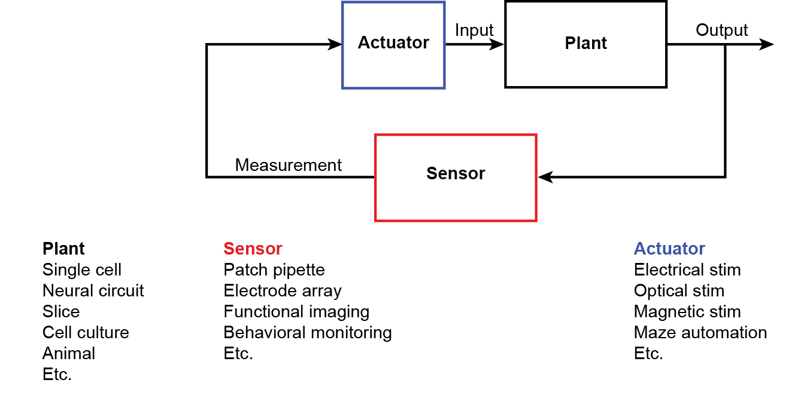 - System output is used to inform the input in some way - Most closed-loop electrophysiology falls into this category - "Activity-guided actuation"<sup>.red[1]</sup> - "Closed-loop stimulation"<sup>.red[1]</sup> - Does not imply __control over system state__ .footnote[ .red[1] D lab paper. ] ] --- layout: false .left-column[ ## Feedback control systems ] .right-column[ 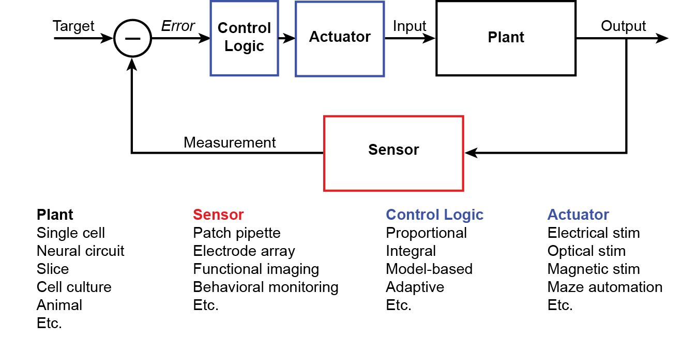 <blockquote> ... maintain a prescribed relationship between one system variable and another by using their difference as a means of control <sup>.red[1]</sup> </blockquote> <blockquote> ... a method of controlling a system by reinserting into it the results of its past performance <sup>.red[2]</sup> </blockquote> .footnote[ .red[1] AIEE Committee Report. _Proposed Symbols and Meanings for Feedback Control Systems_<br> .red[2] Norbert Wiener _The Human Use of Human Beings: Cybernetics and Society_ ] ] --- layout: false .left-column[ ## Distinction Closed-loop<br> vs.<br> Feedback<br> control ] .right-column[ 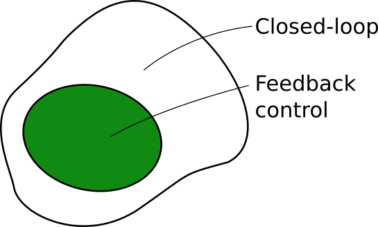 __Feedback control systems are closed-loop systems, but not necessarily vice versa__ - Error signal(s) - Continuous update of actuation - Control over a system state to match reference .red[__Why does this matter__?] ] --- layout: false .left-column[ ## Feedback control ### History ] .right-column[ __Feedback control is a major innovation in human history__ - Ubiquitous in all domains of engineering - Concept is ancient, literally .pull-left[ __Water clocks of Alexandria__ - Circa 250 BC, Ktesbios<sup>.red[1]</sup> 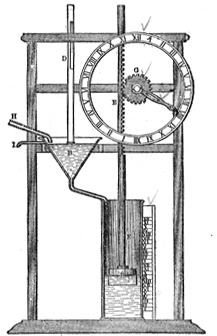 ] .pull-right[ __Centrifugal governor__ - 1788, James Watt<sup>.red[2]</sup> <img class="right" src="./figures/Centrifugal_governor.png" /> ] .footnote[ .red[1] Otto Mayr _The Origins of Feedback Control_<br> .red[2] _Discoveries & Inventions of the Nineteenth Century_ 13th edition ] ] --- layout: false .left-column[ ## Feedback control ### History ] .right-column[ .pull-left[ __Negative feedback amplifier__<sup>.red[1]</sup> - 1927, Harold Steven Black - Allows communication systems to be instantiated using electrical/optical circuit elements 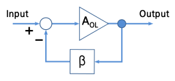 ] .pull-right[ __Autonomous vehicles__ - Tons of sensors and actuators - Very sophisticated control algorithms ] .red[__Feedback control is used everywhere__] .small[ Thermal control, voltage and current supply regulation, automobile cruise control, anti-lock brakes, electrical amplifiers, autonomous robots, quadcopters, satellite positioning control, motor speed regulation, chemical reactor flow control, pressure regulation, optical power regulation, pH control, fly by wire, servo motors, industrial robot control, toilet bowl float, Etc, Etc, ... ] .footnote[ .red[1] https://en.wikipedia.org/wiki/Negative_feedback_amplifier<br> ] ] --- layout: false .left-column[ ## Feedback control ### Compensation ] .right-column[ __Why is feedback control so powerful?__ 1. Compensation - Disturbances due to measurement and actuation noise - Strong plant dynamics - Non-stationary dynamics - Stabilize systems and linearize input/output relationships 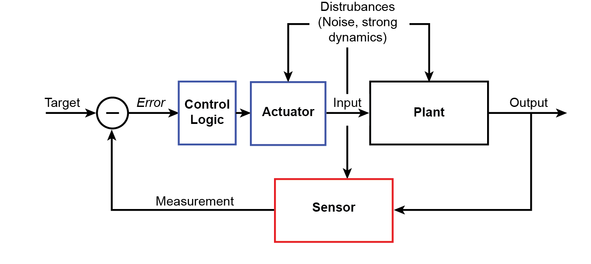 ] --- layout: false .left-column[ ## Feedback control ### Compensation ### Measurement ] .right-column[ __Why is feedback control so powerful?__ 1. Compensation 2. Measurement - Control signal reflects plant state and dynamics 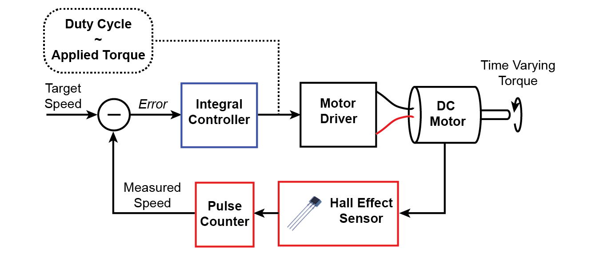 ] --- layout: false .left-column[ ## Feedback control ### Compensation ### Measurement ### Decoupling ] .right-column[ __Why is feedback control so powerful?__ 1. Compensation 2. Measurement 3. Decoupling - Can be used to separate system variables that are __causally__, and possibly __reciprocally__ related 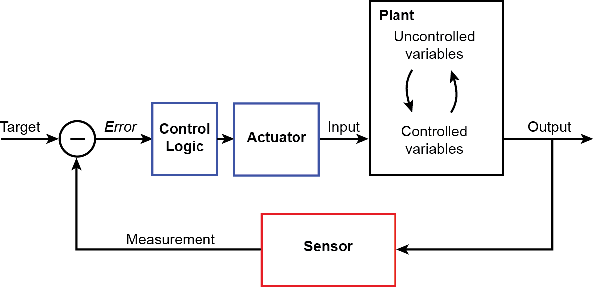 ] --- template: inverse ##.lgray[Feedback Control in Neuroscience<br>] --- layout: false .left-column[ ## Feedback control in Neuroscience ### Voltage clamp ] .right-column[ __Feedback control to measure ionic conductances__ - Membrane voltage non-linearly, and reciprocally coupled to ionic conductances - Feedback control cancels conductances to hold the voltage - Current required for cancellation is a measure of the ionic current at the voltage setpoint 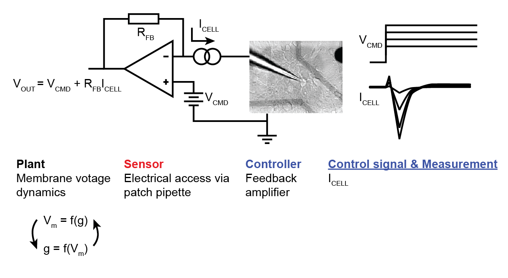 .footnote[ .red[1] Cole, K. S. _Dynamic electrical characteristics of the squid axon membrane._, Annu. Rev. Physiol., 1949 ] ] --- layout: false .left-column[ ## Feedback control in Neuroscience ### Seizure intervention ] .right-column[ __Closed-loop siezure suppression__<sup>.red[1, 2, 3]</sup> - Often lack an error signal, so not truly feedback control 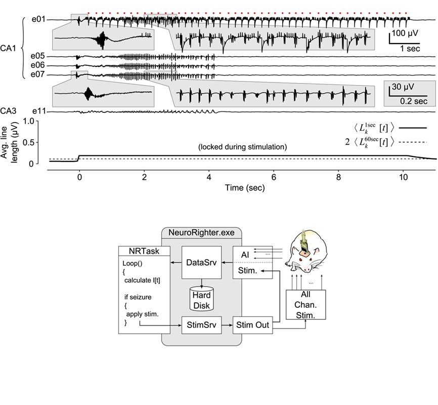 .footnote[ .red[1] Berényi et al. _Closed-Loop Control of Epilepsy by Transcranial Electrical Stimulation_, Science 2012Zemelman B. et al. _Selective photostimulation of genetically chARGed neurons_, Neuron, 2002.<br> .red[2] Paz J.T. et al. _Closed-loop optogenetic control of thalamus as a tool for interrupting seizures after cortical injury_, Nat. Neuro., 2012. .red[3] Krook-Magnuson et al. _On-demand optogenetic control of spontaneous seizures in temporal lobe epilepsy_, Nat. Commun., 2012 ] ] --- layout: false .left-column[ ## Feedback control in Neuroscience ### Artificial embodiment ] .right-column[ __Feedback control to enforce learning rules in dissociated cortical networks.<sup>.red[1,2]</sup>__ .pull-left[ 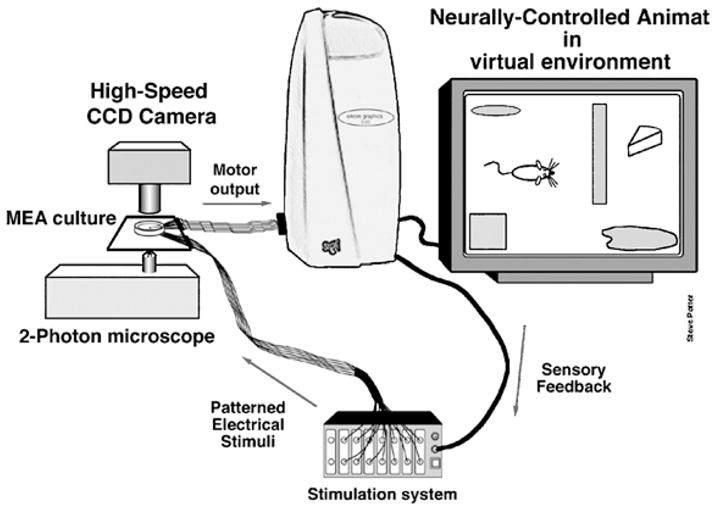 <br> <img class="right" src="./videos/DougRat1st5DIV-FAST.gif" width="80%"/> ] .pull-right[ 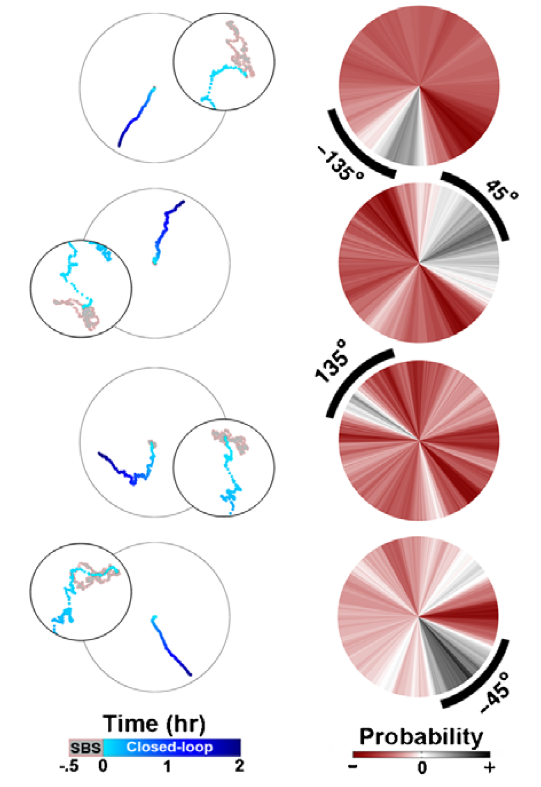 ] .footnote[ .red[1] DeMarse T.B. et al., _The Neurally Controlled Animat: Biological Brains Acting with Simulated Bodies_ Auton. Robots, 2001<br> .red[2] Bakkum D.J. et al. _Spatio-temporal electrical stimuli shape behavior of an embodied cortical network in a goal-directed learning task_, J. Neural Eng., 2008<br> .red[*] Video: Doug Bakkum, Potter Lab @ Georgia Tech ] ] --- layout: false .left-column[ ## Feedback control in Neuroscience ### Artificial embodiment ] .right-column[ __The Silent Barrage Project<sup>.red[1]</sup>__ 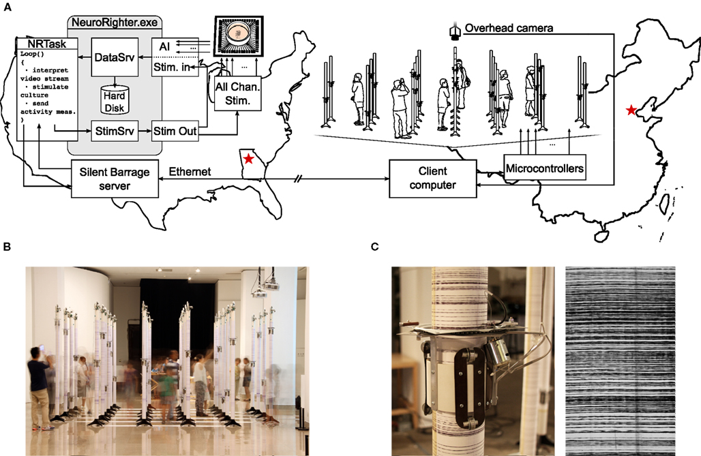 .footnote[ .red[1] http://silentbarrage.com ] ] --- layout: false .left-column[ ## Optogenetics ] .right-column[ __Optogenetic<sup>.red[1, 2]</sup> tools are particularly well suited for use in feedback control__ <br> <br> 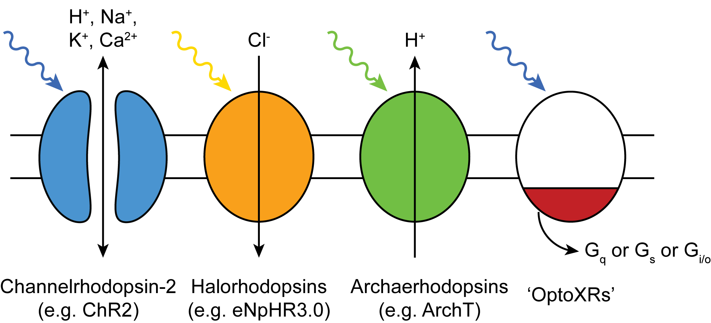 - Minimal electrical recording artifact - Relatively narrow excitation spectra - Bi-directional actuation - Genetic specificity - Millisecond temporal resolution .footnote[ .red[1] Zemelman B. et al. _Selective photostimulation of genetically chARGed neurons_, Neuron, 2002.<br> .red[2] Boyden E.S. et al. _Millisecond-timescale, genetically targeted optical control of neural activity_, Nat. Neuro., 2005. ] ] --- template: inverse ##.lgray[Case study]<br> ###.lgray[Optogenetic feedback control to study synaptic scaling] --- layout: false .left-column[ ## Synaptic scaling ### Case study ] .right-column[ __Upward synaptic scaling__ - Dissociated cortical networks - 24 hour bath application of - TTX: Stop spiking - CNQX: Stop AMPAergic neurotransmission - Measure miniature EPSCs - Synaptic strength fo all excitatory synpases 'scales' in a homeostatic manner<sup>.red[1]</sup> <br> <br> <br> 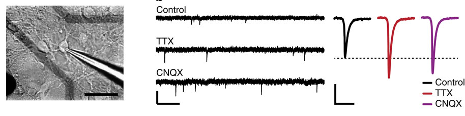 .footnote[ .red[1] Turrigiano, G. et al. _Activity-dependent scaling of quantal amplitude in neocortical neurons_, Nature, 1998<br> .red[*] M-f. Fong et al. _Upward synaptic scaling is dependent on neurotransmission rather than spiking_, Nat. Commun., 2015 ] ] --- layout: false .left-column[ ## Synaptic scaling ### Case study ] .right-column[ __Upward synaptic scaling__ 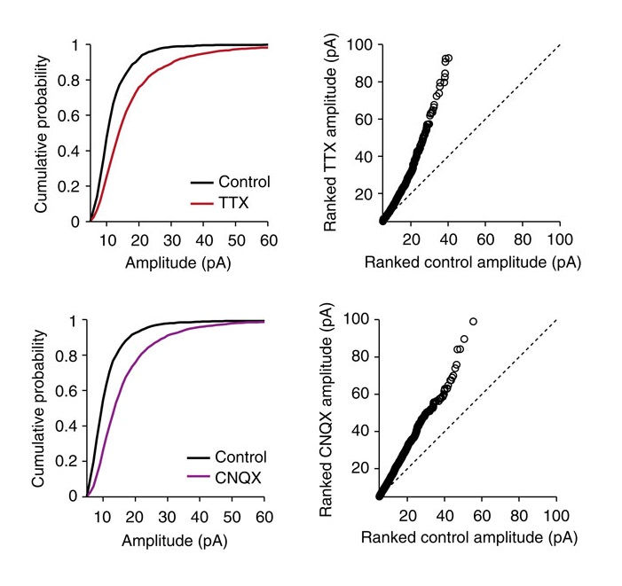 .footnote[ .red[*] M-f. Fong et al. _Upward synaptic scaling is dependent on neurotransmission rather than spiking_, Nat. Commun., 2015 ] ] --- layout: false .left-column[ ## Synaptic scaling ### Case study ] .right-column[ __What triggers scaling?__ - _Option 1:_ Reduced spiking → synaptic scaling<sup>.red[1, 2]</sup> <br> <br> <br> <br> <br> 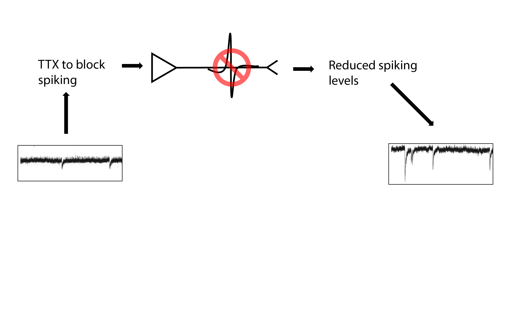 .footnote[ .red[1] Leslie, K. R., et al. _TODO_ J. Neurosci., 2001 <br> .red[2] Ibata, K ., et al., _TODO_ Neuron, 2008 ] ] --- layout: false .left-column[ ## Synaptic scaling ### Case study ] .right-column[ __What triggers scaling?__ - _Option 1:_ Reduced spiking → synaptic scaling - _Option 2:_ Reduced transmission → reduced spiking → synaptic scaling<sup>.red[1]</sup> <br> <br> <br> 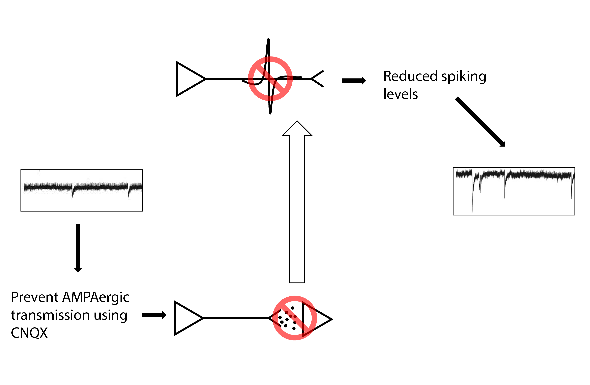 .footnote[ .red[1] Turrigiano, G. et al. _Activity-dependent scaling of quantal amplitude in neocortical neurons_, Nature, 1998<br> ] ] --- layout: false .left-column[ ## Synaptic scaling ### Case study ] .right-column[ __What triggers scaling?__ - _Option 1:_ Reduced spiking → synaptic scaling - _Option 2:_ Reduced transmission → reduced spiking → synaptic scaling - _Option 3:_ Reduced transmission → synaptic scaling <sup>.red[1, 2]</sup> 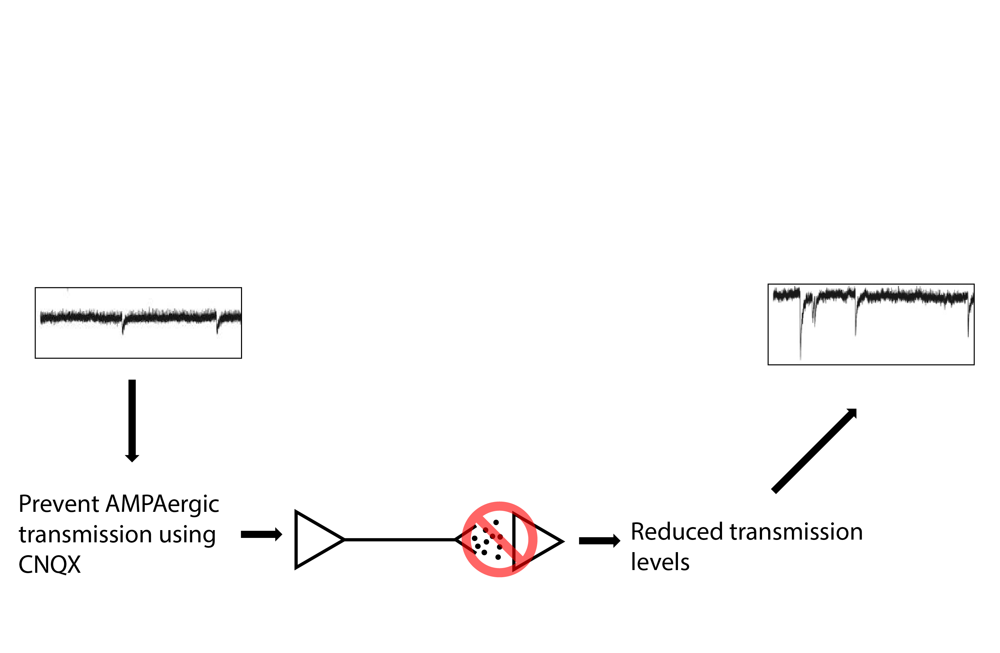 .footnote[ .red[1] Burrone, J., et al. _TODO_ Nature, 2002<br> .red[2] Wilhelm, J. C., & Wenner, P. _TODO_ PNAS, 2008 ] ] --- layout: false .left-column[ ## Synaptic scaling ### Case study ] .right-column[ __Oppotunity for feedback control__ - _Option 1:_ Reduced spiking → synaptic scaling - _Option 2:_ Reduced transmission → reduced spiking → synaptic scaling - _Option 3:_ Reduced transmission → synaptic scaling <sup>.red[1,2 ]</sup> 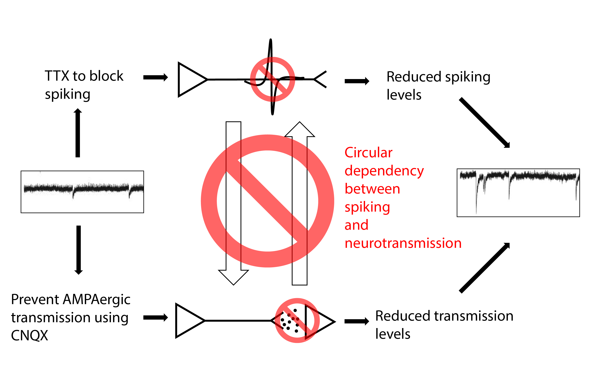 ] <!-- --- layout: false .left-column[ ## Synaptic Scaling ### Case study ] .right-column[ __Optogenetic feedback control__ 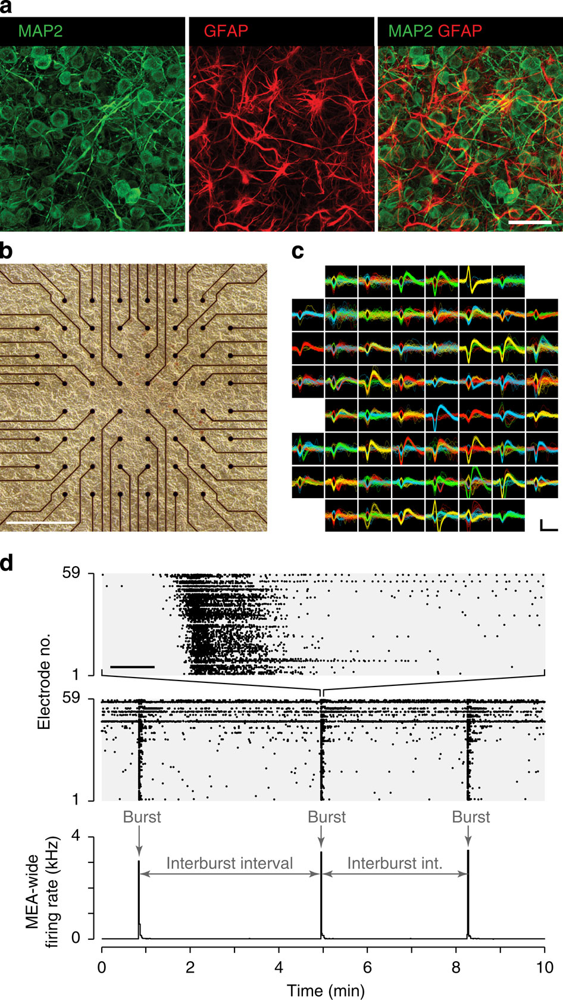 .footnote[ .red[*] M-f. Fong et al. _Upward synaptic scaling is dependent on neurotransmission rather than spiking_, Nat. Commun., 2015 ] ] --> --- layout: false .left-column[ ## Synaptic Scaling ### Case study ] .right-column[ __Optogenetic feedback control to decouple neurotransmission and spiking__ 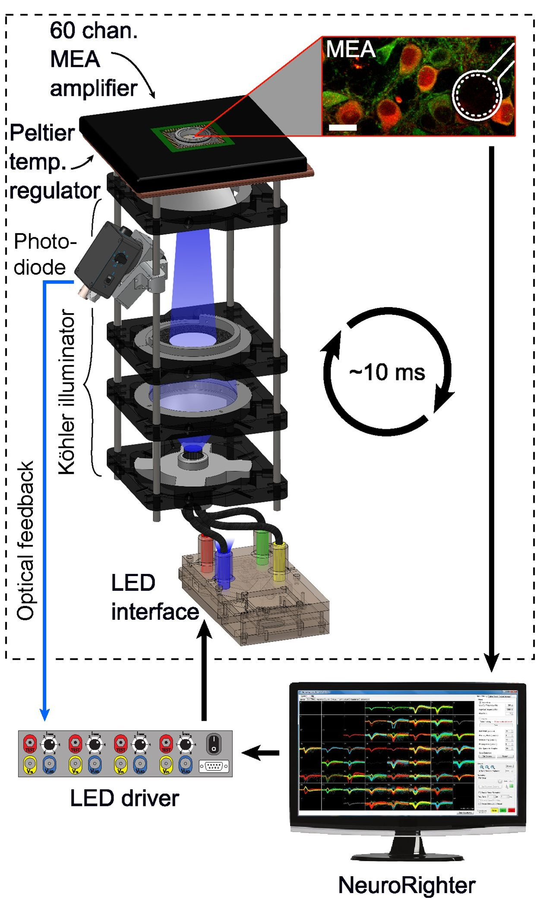 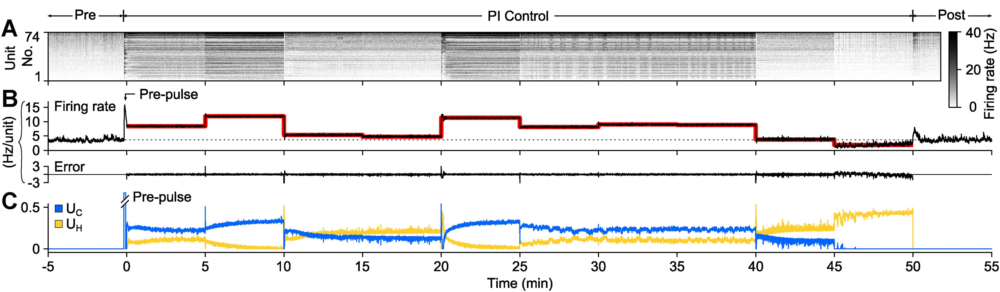 .footnote[ <!--.red[1] J. Newman et al. _Closed-loop, multichannel experimentation using the open-source NeuroRighter electrophysiology platform_, Front. Neural Circuits, 2013<br> --> .red[2] J. Newman et al. _Optogenetic feedback control of neural activity_, eLife, 2015<br> ] ] --- layout: false .left-column[ ## Synaptic Scaling ### Case study ] .right-column[ __Optogenetic feedback control to decouple neurotransmission and spiking__ .footnote[ .red[1] J. Newman et al. _Optogenetic feedback control of neural activity_, eLife, 2015<br> ] ] --- layout: false .left-column[ ## Synaptic Scaling ### Case study ] .right-column[ __Optogenetic feedback control to decouple neurotransmission and spiking__ 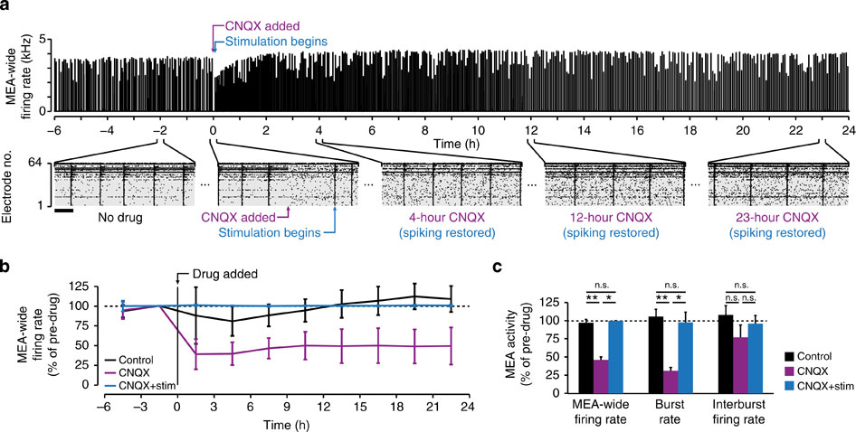 .footnote[ .red[1] M-f. Fong et al. _Upward synaptic scaling is dependent on neurotransmission rather than spiking_, Nat. Commun., 2015<br> ] ] --- layout: false .left-column[ ## Synaptic Scaling ### Case study ] .right-column[ __Optogenetic feedback control to decouple neurotransmission and spiking__ - Reduced neurotransmission causes upward synaptic scaling without a reduction in spiking activity 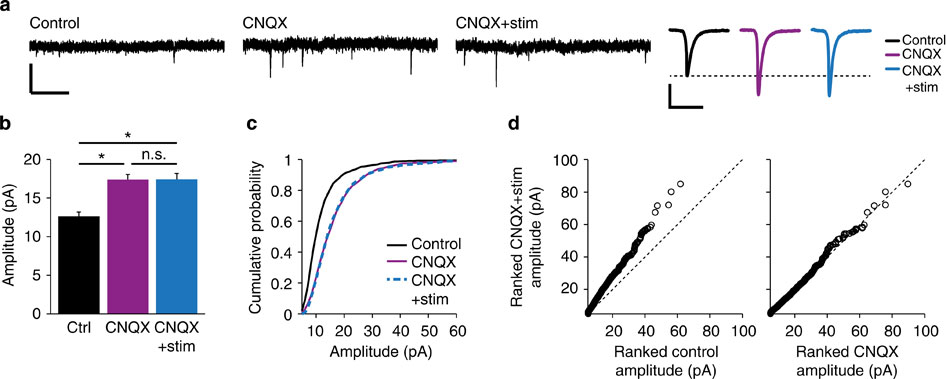 .footnote[ .red[1] M-f. Fong et al. _Upward synaptic scaling is dependent on neurotransmission rather than spiking_, Nat. Commun., 2015<br> ] ] --- layout: false .left-column[ ## Synaptic Scaling ### Case study ] .right-column[ __Optogenetic feedback control to decouple neurotransmission and spiking__ - Reduced neurotransmission causes upward synaptic scaling without a reduction in spiking activity - Homeostatic changes in synaptic strength may not preserve the relative weights of synapses - Implications for memory formation and maintenance in the CNS - May inform teatments of diseases associated with aberrant homeostatic excitatory regulation - Tinnitus - Some forms of epilepsy .footnote[ .red[1] M-f. Fong et al. _Upward synaptic scaling is dependent on neurotransmission rather than spiking_, Nat. Commun., 2015<br> ] ] --- layout: false .left-column[ ## Optogenetic feedback control 2.0 ] .right-column[ __Spatial light modulation__ __Features of neural activity than firing rate__ __Hardware and software that is feedback control capable__ ] --- layout: false .left-column[ ## Optogenetic feedback control 2.0 ] .right-column[ __Spatial light modulation__ __Features of neural activity than firing rate__ __Hardware and software that is feedback control capable__ 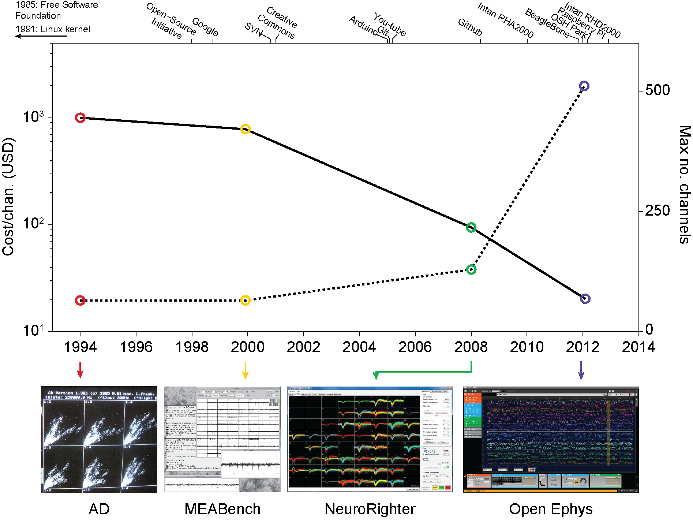 .footnote[ .red[1] Siegle, J.H. et al. _Neural ensemble communities: open-source approaches to hardware for large-scale electrophysiology_, Curr. Opin. Neurobiol., 2015<br> ] ] --- layout: false ## Acknowledgements .pull-left[ __Steve M. Potter__ __Matthew Wilson__ ### Scaling project Peter Wenner (Emory University) Ming-fai Fong (now in Mark Bear's lab @ MIT) # Neurorighter and robotic embodiement Riley Zeller-Townson Doug Bakkum UWA team ] .pull-right[ ### MIT Jakob Voigts Josh Siegle Carmen ### Funding CBMM NRSA COPN R01 ] --- template: inverse ## End --- template: inverse ## Appendix --- layout: false .left-column[ ## Neurorighter ] .right-column[ __Open-source multichannel data acquisition system__ - Closed-loop recording, (MUXed) stimulation on all electrodes, and lots of auxiliary analog and digital IO - Semi low latency feedback (5-10 ms) - Extensible at runtime using plugin architecture - Low cost .red[*] 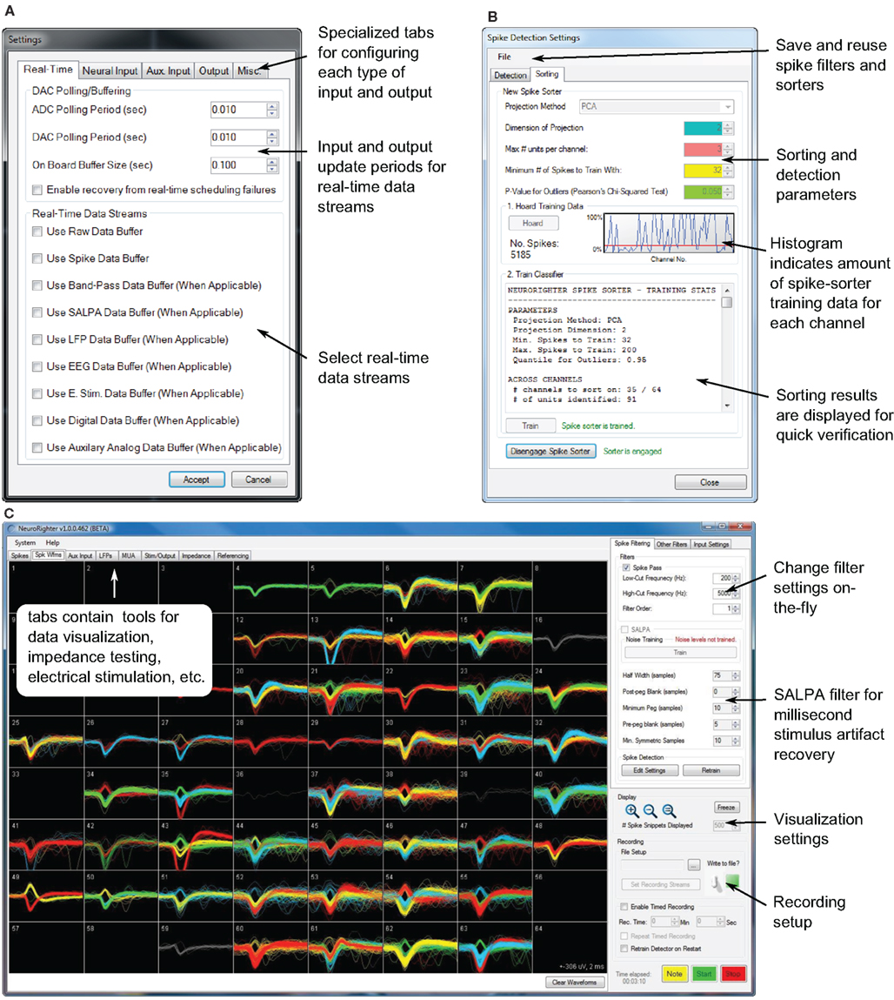 .footnote[ .red[*] material cost < 10000 USD<BR> [repository link](https://github.com/rzellertownson/neurorighter) ] ]